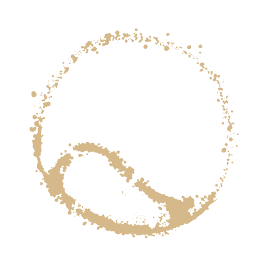

Antes do NeuroMeditAntes de qualquer método, houve uma árvore no quintal. Este é o poema que guarda a raiz do NeuroMedit.
Role devagarTudo começou numa árvore, em frente no quintal da casa onde eu morava.
Eu encontrei a minha casa, nela tinha uma cama, uma cozinha, e muita paz,
a meditação era estar ali presente, ouvindo o vento entrar em casa pelas folhas,
o movimento da árvore era natural, eu sentia — me movia junto com a árvore, eu e ela éramos apenas um.
A meditação sempre existiu, nesta casa que eu encontrei ela,
a música dos galhos, o conforto com a natureza, o movimento, o ar fresco,
dentro dela, abrigado do sol, fui crescendo, eu ela, cada galho era uma parte de mim,
quando chovia, eu ficava escorregadio, galhos molhados, abrigo úmido, eu tinha que me ver por fora.
Verde musgo, os insetos que habitavam em mim picavam sem saber onde ir, eu estava numa estação diferente, folhas molhadas,
quando eu me balançava, uma outra chuva caía sobre o chão e molhava a terra,
alimentando cada vez mais as minhas raízes, mais por fora do que por dentro,
a chuva era outra parte de mim regressando e me ajudando a crescer.
Isso é o que tento devolver com o NeuroMedit — presença.
A árvore virou casa, a casa virou método. O resto do caminho está no meu portfólio.